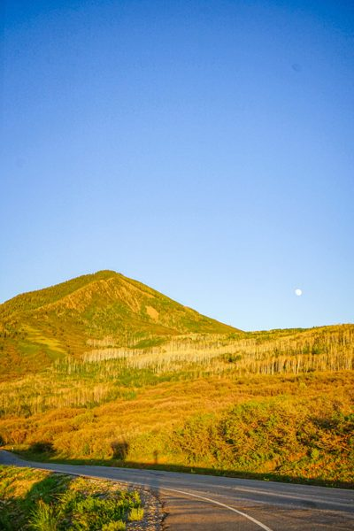

Browse retired HTML snippets, tours, imagery, and experiments that we pulled from the live site but kept for reference.
_redirects. View it locally by opening _garage/garage.html in a browser, or visit directly if you know the path on a preview deploy. Nothing in _garage/ is linked from the main site.
Photography that was pulled from the live site but preserved for possible reuse.

HTML tour cards pulled from index.html. Each entry keeps the original markup so we can lift it back in with minimal work.
Abandoned UI experiments and layouts that might seed future work.